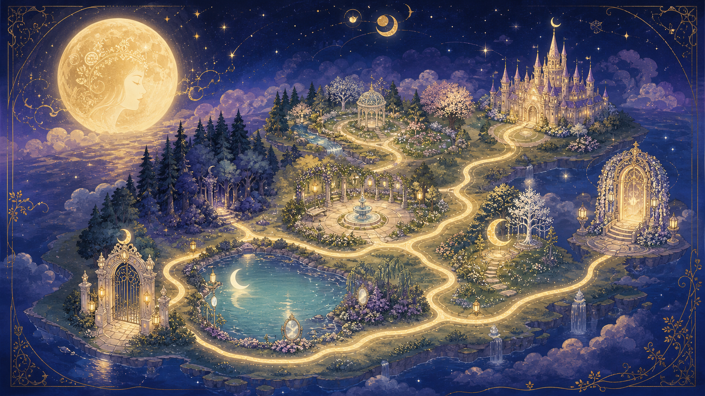

✦ TSUKIYOMI WONDERLAND ✦
月読みワンダーランド
～ 天命の旅 ～
天命鑑定書を手がかりに、ワンダーランドを冒険する旅へ。
整えポイントを集め、あなただけの天命の扉を開いてください。
✦ ✦ ✦
✦ TSUKIYOMI WONDERLAND ✦
～ 天命の旅 ～
天命鑑定書を手がかりに、ワンダーランドを冒険する旅へ。
整えポイントを集め、あなただけの天命の扉を開いてください。
✦ ✦ ✦
天命鑑定書を手に、旅に出ましょう。
あなたの情報を教えてください。
✦ 天命鑑定書をお持ちでない方は生年月日のみ入力で自動計算します
✦ WONDERLAND MAP ✦
エリアをクリックして探索しよう
